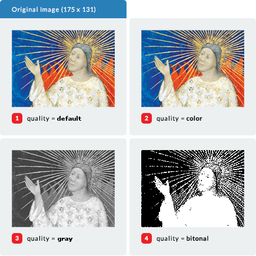
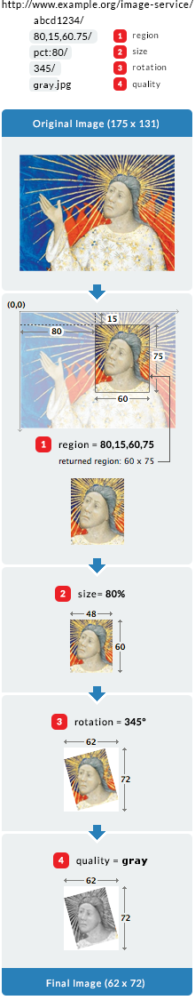

Editors
- Stuart Snydman, Stanford University
- Simeon Warner, Cornell University
- Robert Sanderson, Los Alamos National Laboratory
- Jon Stroop, Princeton University
Authors
- Ben Albritton, Stanford University
- Tom Cramer, Stanford University
- Peter James, British Library
- Neil Jefferies, Oxford University
- Christopher Jesudurai, Stanford University
- Sean Martin, British Library
- Roger Mathisen, National Library of Norway
- Petter Rønningsen, National Library of Norway
Abstract
This document describes an image delivery API proposed by the International Image Interoperability Framework (IIIF)
group. The IIIF image API specifies a web service that returns an image in response to a standard http or https request.
The URL can specify the region, size, rotation, quality characteristics and format of the requested image. A URL can
also be constructed to request basic technical information about the image to support client applications. The IIIF API
was conceived of to facilitate systematic reuse of image resources in digital image repositories maintained by cultural
heritage organizations. The API could be adopted by any image repository or service, and can be used to retrieve static
images in response to a properly constructed URL.
Please send feedback to iiif-discuss@googlegroups.com
1. Audience

This document is intended for developers building applications that share digital image assets. This includes:
-
Developers building digital image repositories who would like to offer services for easily sharing digital images with
other repositories, web applications, or other software that uses images from the web.
-
Developers building web applications or software that want to retrieve images from compliant repositories.
-
A specifically targeted audience are developers and managers of digital image repositories, web applications and image
tools at cultural heritage institutions, like museums, libraries and archives.
2. URL Syntax
The IIIF Image API can be called in two forms: one to request an image, and a second to request techincal information
about the image. Both forms convey the request's information in the path segments of the URI, rather than as query
parameters. This makes responses more easily able to be cached, either at the server or by standard web-caching
infrastructure. It also permits a minimal implementation using pre-computed files in a matching directory structure.
There are four parameters shared by the two requests, and other IIIF specifications:
| scheme |
Indicates the use of the http or https protocol in calling the service.
|
| Server |
The host server on which the service resides.
|
| prefix |
The path on the host server to the service. This prefix is optional, but may be useful when the host server supports
multiple services. The prefix MAY contain multiple path segments, delimited by slashes, but all other special characters
MUST be encoded. See Section 9 for more information.
|
| identifier |
The identifier of the requested image, expressed as a string. This may be an ark, URN, filename, or other identifier.
Special characters MUST be URI encoded.
|
The combination of these parameters forms the image’s base URI, according to the following URI Template
(RFC6570):
{scheme}://{server}{/prefix}/{identifier}
To allow for extension, this specification does not define the behaviour of an implementing server when it receives
requests that do not match one of described request syntaxes.
2.1. Image Request URL Syntax
The IIIF Image API URL for requesting an image MUST conform to the following format:
http[s]://server/[prefix/]identifier/region/size/rotation/quality[.format]
where [] delimits components which are optional.
The URI Template form is:
{scheme}://{server}{/prefix}/{identifier}/{region}/{size}/{rotation}/{quality}{.format}
For example:
http://www.example.org/image-service/abcd1234/full/full/0/native.jpg
The sections of the Image Request URL include region, size, rotation, quality and format parameters defining the
characteristics of the returned image. These are described in detail in
Section 4 - Image Request Parameters.
2.2 Image Information Request URL Syntax
The IIIF Image API URL for requesting image information MUST conform to the following syntax:
http[s]://server/[prefix/]identifier/info.json
where "info.json" is a literal string.
For each image made available, the server, prefix and identifier components of the information request must be identical
to those for the image request described above.
The URI Template form is:
{scheme}://{server}{/prefix}/{identifier}/info.json
For example:
http://www.example.org/image-service/abcd1234/info.json
It is recommended that if the image’s base URI is dereferenced, then the client should either redirect to the
information request using a 303 status code (see Section 6.1), or return the same result.
See Section 5 - Image Information Request for more information.
3. Identifier
The API places no restrictions on the form of the identifiers that a server may use or support, although the identifier
MUST be expressed as a string. All special characters (e.g. ? or #) MUST be URI encoded to avoid unpredictable client
behaviors. The URL syntax relies upon slash (/) separators so any slashes in the identifier MUST be URI encoded (aka.
percent-encoded, replace / with %2F ). See discussion in
Section 9 - URL Encoding and Decoding.
4. Image Request Parameters
All parameters described below are required for compliant construction of a IIIF image API URL. The sequence of
parameters in the URL MUST be in the order described below. The order of the parameters is also intended as the order of
the operations by which the service should manipulate the image content. Thus, the image content is first extracted as a
region of the source image, then scaled to the requested size, rotated and transformed into the color depth and format.
This resulting image content is returned as the representation for the URL. All transformations are performed within the
bounds of integer arithmatic. The rounding method is not specified. Floating point numbers should be have at most 10
decimal digits and consist only of decimal digits and “.” with a leading zero if less than 1.
4.1. Region
The region parameter defines the rectangular portion of the source image to be returned. Region can be specified by
pixel coordinates, percentage or by the value “full”, which specifies that the entire region of the source image should
be returned.
| Form of Region Parameter |
Description |
| full |
The complete image is returned, without any cropping.
|
| x,y,w,h |
The region of the source image to be returned is defined in terms of absolute pixel values. The value of x
represents the number of pixels from the 0 position on the horizontal axis. The value of y represents the number of
pixels from the 0 position on the vertical axis. Thus the x,y position 0,0 is the upper left-most pixel of the image. w
represents the width of the region and h represents the height of the region in pixels.
|
| pct:x,y,w,h |
The region to be returned is specified as a sequence of percentages of the source image’s dimensions. Thus,
x represents the number of pixels from the 0 position on the horizontal axis, calculated as a percentage of the source
image’s width. w represents the width of the region calculated as a percentage of the source image’s width. The same
applies to y and h respectively. These may be floating point numbers (see
Section 5 - Image Information Request).
|
If the request specifies a region which extends beyond the dimensions of the source image, then the service should
return an image cropped at the boundary of the source image.
If the requested region's height or width is zero, or if the region is entirely outside the bounds of the source image,
then the server MUST return a 400 (bad request) status code.
Examples:
-
1
http://www.example.org/image-service/abcd1234/full/full/0/native.jpg
-
2
http://www.example.org/image-service/abcd1234/80,15,60,75/full/0/native.jpg
-
3
http://www.example.org/image-service/abcd1234/80,15,125,200/full/0/native.jpg
-
4
http://www.example.org/image-service/abcd1234/pct:10,10,80,70/full/0/native.jpg
-
5
http://www.example.org/image-service/abcd1234/pct:20,20,100,100/full/0/native.jpg
4.2. Size
The size parameter determines the dimensions to which the extracted region is to be scaled.
| Form of Region Parameter |
Description |
| full |
The extracted region is not scaled, and is returned at its full size.
|
| w, |
The extracted region should be scaled so that its width is exactly equal to w, and the height will be a
calculated value that maintains the aspect ratio of the requested region.
|
| ,h |
The extracted region should be scaled so that its height is exactly equal to h, and the width will be a
calculated value that maintains the aspect ratio of the requested region.
|
| pct:n |
The width and height of the returned image is scaled to n% of the width and height of the extracted region.
The aspect ratio of the returned image is the same as that of the extracted region.
|
| w,h |
The width and height of the returned image are exactly w and h. The aspect ratio of the returned image MAY
be different than the extracted region, resulting in a distorted image.
|
| !w,h |
The image content is scaled for the best fit such that the resulting width and height are less than or equal to
the requested width and height. The exact scaling MAY be determined by the service provider, based on characteristics
including image quality and system performance. The dimensions of the returned image content are calculated to
maintain the aspect ratio of the extracted region.
|
If the resulting height or width is zero, then the server MUST return a 400 (bad request) status code.
The image server MAY support scaling beyond the full size of the extracted region.
Examples:
-
1
http://www.example.org/image-service/abcd1234/full/full/0/native.jpg
-
2
http://www.example.org/image-service/abcd1234/full/100,/0/native.jpg
-
3
http://www.example.org/image-service/abcd1234/full/,100/0/native.jpg
-
4
http://www.example.org/image-service/abcd1234/full/pct:50/0/native.jpg
-
5
http://www.example.org/image-service/abcd1234/full/150,75/0/native.jpg
-
6
http://www.example.org/image-service/abcd1234/full/!150,75/0/native.jpg
4.3. Rotation
The rotation value represents the number of degrees of clockwise rotation from the original, and may be any
floating point number from 0 to 360. Initially most services will only support 0, 90, 180 or 270 as valid
values.
Examples:
-
1
http://www.example.org/image-service/abcd1234/full/full/0/native.jpg
-
2
http://www.example.org/image-service/abcd1234/full/full/90/native.jpg
-
3
http://www.example.org/image-service/abcd1234/full/full/180/native.jpg
-
4
http://www.example.org/image-service/abcd1234/full/full/270/native.jpg
-
5
http://www.example.org/image-service/abcd1234/full/full/22.5/native.jpg
In most cases a rotation will change the width and height dimensions of the returned image file. The service SHOULD
return an image file that contains all of the image contents requested in the region and size parameters, even if the
dimensions of the returned image file are different than specified in the size parameter. The image contents SHOULD NOT
be scaled as a result of the rotation, and there SHOULD be no additional space between the corners of the rotated image
contents and the bounding box of the returned image file.
For non-90-degree rotations the API does not specify the background color.
4.4. Quality
The quality parameter determines the bit-depth of the delivered image. The quality value of "native" requests an image
of the same bit-depth as the source image. Values other than "native" are requested transformations of the bit-depth of
the source image.
| Quality Parameter |
Returned |
| native |
The image is returned at an unspecified bit-depth.
|
| color |
The image is returned in full color, typically using 24 bits per pixel.
|
| grey |
The image is returned in greyscale, where each pixel is black, white or any degree of grey in between, typically
using 8 bits per pixel.
|
| bitonal |
The image returned is bitonal, where each pixel is either black or white, using 1 bit per pixel when the format
permits.
|
Examples:
-
1
http://www.example.org/image-service/abcd1234/full/600,/0/native.jpg
-
2
http://www.example.org/image-service/abcd1234/full/600,/0/color.jpg
-
3
http://www.example.org/image-service/abcd1234/full/600,/0/grey.jpg
-
4
http://www.example.org/image-service/abcd1234/full/600,/0/bitonal.jpg

4.6. Order of Implementation
The sequence of parameters in the URL is intended to express the order in which image manipulations are made against the
original. This is important to consider when implementing the service because applying the same parameters in a
different sequence will often result in a different image being delivered. The order is critical so that the application
calling the service reliably receives the output it expects.
The parameters should be interpreted as if the the sequence of image manipulations were:
Region THEN Size THEN Rotation THEN Quality THEN Format

5. Image Information Request
The service MUST return technical information about the requested image in the JSON format. The request for technical
information MUST conform to the format:
http[s]://server/[prefix/]identifier/info.json
The response will return the following information
| Element |
Required ? |
Description |
| @context |
Required |
The context document that describes the semantics of the terms used in the document. This must be the URI:
"http://library.stanford.edu/iiif/image-api/1.1/context.json"
for version 1.1 of the IIIF Image API. This document
allows the response to be interpreted as RDF, using the
JSON-LD serialization.
|
| @id |
Required |
The base URI of the image (as defined in Section 2), including scheme, server, prefix and
identifier without a trailing slash.
|
| width |
Required |
The width of the source image.
|
| height |
Required |
The height of the source image.
|
| scale_factors |
Optional |
Some image servers support the creation of multiple resolution levels for a single image in
order to optimize the efficiency in delivering images of different sizes. The scale_factors element expresses a list of
resolution scaling factors. For example a scale factor of 4 indicates that the service can efficiently deliver images at
25% of the height and width of the source image.
|
| tile_width |
Optional |
Some image servers efficiently support delivery of predefined tiles enabling easy assembly of
portions of the image. It is assumed that the same tile sizes are used for all scale factors supported. The tile_width
element expresses the width of the predefined tiles.
|
| tile_height |
Optional |
The tile_height element expresses the height of the predefined tiles. See description of
tile_width.
|
| formats |
Optional |
The list of image format parameter values available for the image.
|
| qualities |
Optional |
The list of image quality parameter values available for the image.
|
| profile |
Optional |
URI indicating the compliance level supported. Values as described in
Section 8. Compliance Levels
|
The JSON response should conform to the format shown in the following example:
{
"@context" : "http://library.stanford.edu/iiif/image-api/1.1/context.json",
"@id" : "http://iiif.example.com/prefix/1E34750D-38DB-4825-A38A-B60A345E591C",
"width" : 6000,
"height" : 4000,
"scale_factors" : [ 1, 2, 4 ],
"tile_width" : 1024,
"tile_height" : 1024,
"formats" : [ "jpg", "png" ],
"qualities" : [ "native", "grey" ],
"profile" : "http://library.stanford.edu/iiif/image-api/1.1/compliance.html#level0"
}
The @context property is included to make the JSON document also a valid JSON-LD representation. In order to allow for
extension, additional properties not specified here may be included but should be ignored if not understood.
6. Server Responses
6.1. Successful Responses
Servers may transmit HTTP responses with 200 (Successful) or 3xx (Redirect) status codes when the request has been
successfully processed. If the status code is 200, then the entity-body MUST be the requested image or information
response. If the status code is 301, 302, 303, or 304, then the entity-body is unrestricted, but it is RECOMMENDED to
be empty. If the status code is 301, 302, or 303 then the Location HTTP Header MUST be set containing the URL of the
image that fulfills the request. This enables servers to have a single canonical URL to promote caching of responses.
Status code 304 is handled exactly as per the HTTP specification. Clients should therefore expect to encounter all of
these situations and not assume that the entity-body of the initial response necessarily contains the image data.
6.2. Error Conditions
The order in which servers parse requests and detect errors is not specified. A request will fail on the first error
encountered and return an appropriate http status code from the list below. It is recommended that the body of the error
response includes a human-readable description of the error in either plain text or html.
| Error Code |
Description |
| 400 Bad Request |
This response is used when it is impossible for the server to fulfil the request, for example if the combination
of parameters would result in a zero-sized image.
|
| 401 Unauthorized |
Authentication is required and not provided. See Section 7 below for details. |
| 403 Forbidden |
The user, authenticated or not, is not permitted to perform the requested operation. |
| 404 Not Found |
The image resource specified by [identifier] does not exist |
| 414 URI Too Long |
Requests are limited to 1024 characters. |
| 415 Invalid Media |
Format not available (implies failure of the format specifier). |
| 500 Internal Server Error |
The server encountered an unexpected error that prevented it from fulfilling the request. |
| 501 Not Implemented |
A valid IIIF request that is not implemented by this server. If the requested format is not implemented then a 415
error should be used.
|
| 503 Service Unavailable |
Used when the server is busy/temporarily unavailable due to load/maintenance issues. An alternative to connection
refusal with the option to specify a back-off period.
|
7. Authentication
This API does not specify whether the image server will support authentication or what mechanism it might use. In the
case of "401 Unauthorized" HTTP error response, the content of the WWW-Authenticate header will depend on the
authentication mechanism supported by the server. If the server supports HTTP Basic or Digest authentication then the
header should follow RFC2617, for example:
WWW-Authenticate: Basic realm="Images"
If the server supports cookie-based authentication then the response should include the location of the page that will
allow the user to login:
WWW-Authenticate: Cookie location="https://example.com/login&redirect={URI}"
Where {URI} is a template parameter that SHOULD be used if the login server supports redirection after login. A client
MUST substitute the current page URI in place of {URI} before presenting a login link to the user. Note that while there
is widespread agreement that the limitation of WWW-Authenticate to Basic and Digest authentication in the current HTTP
specification, there is no standard way to indicate appropriate redirection to a login screen, or convey a URI template
to insert a return URI.
8. Compliance Levels
A service should specify on all responses the extent to which the API is supported. This is done by including an HTTP
Link header (RFC5988) entry pointing to the
description of the highest level of conformance of which ALL of the requirements are met. The “rel” type to be used is
“profile”, and thus a complete header might look like:
Link: <http://library.stanford.edu/iiif/image-api/1.1/compliance.html#level0>;rel="profile"
An image server MAY declare different compliance levels for different images. If the compliance level is not indicated, then a client should assume level 0 compliance only. For detailed compliance definitions see
the full compliance description page.
The compliance profile URI given in the Link header (between < and >) may also be returned in the profile property of responses to Image Information Requests.
9. URL Encoding and Decoding
The URL syntax of this API relies upon slash (/) separators which MUST NOT be encoded. Clients MUST percent-encode
special characters (the to-encode set below: percent and gen-delims of
RFC3986 except the colon) within the components
of requests. For example, any slashes within the identifier part of the URL MUST be percent-encoded. Encoding is
necessary only for the identifier because other components will not include special characters.
to-encode = "/" / "?" / "#" / "[" / "]" / "@" / "%"
Upon receiving an API request, a server MUST first split the URL path on slashes and then decode any percent-encoded
characters in each component.
Additionally, if identifiers include any characters outside the US-ASCII set then the encoding to octets must be defined
consistently on client and server, and the octets MUST be percent-encoded. Percent-encoding other characters introduces
no ambiguity but is unnecessary.
| Parameters |
URL path (without leading base_uri plus “/”) |
| identifier=id1 region=full size=full rotation=0 quality=native |
id1/full/full/0/native |
| identifier=id1 region=0,10,100,200 size=pct:50 rotation=90 quality=native format=png |
id1/0,10,100,200/pct:50/90/native.png |
| identifier=id1 region=pct:10,10,80,80 size=50, rotation=22.5 quality=color format=jpg |
id1/pct:10,10,80,80/50,/22.5/color.jpg |
| identifier=bb157hs6068 region=full size=full rotation=270 quality=grey format=jpg |
bb157hs6068/full/full/270/grey.jpg |
| identifier=ark:/12025/654xz321 region=full size=full rotation=0 quality=native |
ark:%2F12025%2F654xz321/full/full/0/native |
| identifier=urn:foo:a123,456 region=full size=full rotation=0 quality=native |
urn:foo:a123,456/full/full/0/native |
| identifier=urn:sici:1046-8188(199501)13:1%3C69:FTTHBI%3E2.0.TX;2-4 region=full size=full rotation=0 quality=native |
urn:sici:1046-8188(199501)13:1%253C69:FTTHBI%253E2.0.TX;2-4/full/full/0/native |
| identifier=http://example.com/?54#a region=full size=full rotation=0 quality=native |
http:%2F%2Fexample.com%2F%3F54%23a/full/full/0/native |
| identifier=id1 image information request |
id1/info.json |
Servers which are incapable of processing arbitrarily encoded identifiers SHOULD make their best efforts to expose only
image identifiers for which typical clients will not encode any of the characters, and thus it is RECOMMENDED to limit
characters in identifiers to letters, numbers and the underscore character.
10. Security Considerations
This API defines a URI syntax and the semantics associated with its components. The composition of URIs has few security
considerations except possible exposure of sensitive information in URIs or revealing of browse/view behavior of users.
Server applications implementing this API must consider possible denial-of-service attacks, and authentication
vulnerabilities based on DNS spoofing. Applications must be careful to parse incoming requests (URIs) in ways that avoid
overflow or injection attacks.
Early sanity checking of URI’s (lengths, trailing GET, invalid characters, out-of-range parameters) and rejection with
appropriate response codes is recommended.
A. Implementation Notes
-
For use cases that enable the saving of the image, it is RECOMMENDED to use the HTTP Content-Disposition header
(RFC6266) to provide a convenient filename that
distinguishes the image, based on the identifier and parameters provided.
-
This specification makes no assertion about the rights status of requested images or metadata, whether or not
authentication has been accomplished. Please see the IIIF Metadata API for rights information.
-
This API does not specify how image servers fulfill requests, what quality the returned images will have for different
parameters, or how parameters may affect performance. See the compliance document for more discussion.
-
Image identifiers that include the slash (/ %2F) or backslash (\ %5C) characters may cause problems with some HTTP
servers. Apache servers from version 2.2.18 support the "AllowEncodedSlashes NoDecode" (link to
http://httpd.apache.org/docs/2.2/en/mod/core.html#allowencodedslashes)
configuration directive which will correctly pass these characters to client applications without rejecting or
decoding them. Servers using older versions of Apache and local identifiers which include these characters will
need to use a workaround such as internally translating or escaping slash and backslash to safe value (perhaps
by double URL-encoding them).
-
As described in Section 4.2 (Rotation), in order to retain the size of the
requested image contents, rotation will change the width and height dimensions of the returned image file. A
formula for calculating the dimensions of the returned image file for a given rotation can be found here.
B. Acknowledgments
The production of this document was generously supported by a grant from the
Andrew W. Mellon Foundation.
The full IIIF Working Group deserves thanks and recognition for their continuous engagement, innovative ideas and
feedback. Members of the group not listed as authors or editors above include Aquiles Alencar Brayner, Richard
Boulderstone, Svein Arne Brygfjeld, Tom Cramer, Markus Enders, Renhart Gittens, David Golding, Tim Gollins, Peter James,
Dean Krafft, Matt McGrattan, Stephane Pillorget, Johan van der Knijff, Romain Vassilieff, and William Ying.
The inspiration, use cases and initial outline for this API originated from the work of the Digital Medieval Manuscript
Interoperabiltiy Technical Council.
Attendees of the third annual LibDevConX workshop gave an early draft of this API a thoughtful hearing and provided
essential feedback to ensure that the API fit with diverse use cases and technical environments.
Many thanks to Matthieu Bonicel, Kevin Clarke, Mark Patton, Lynn McRae, Willy Mene, Brian Tingle, Ian Davis and Scotty
Logan for your thoughtful contributions to the effort and written feedback.
C. Change Log
| Date |
Editor |
Description |
| 2013-09-17 |
ssnydman |
Version 1.1 released. |
| 2013-09-04 |
ssnydman |
Added @context to Image Information Request table in Section 5. |
| 2013-06-26 |
ssnydman |
Changed quality parameter definitions in Section 4.4. |
| 2013-06-17 |
ssnydman |
Draft release 1.1. View change log. |
| 2012-08-10 |
ssnydman |
Release 1.0 |
| 2012-07-13 |
rsanderson |
Incorporates responses to RFC feedback |
| 2012-03-09 |
ssnydman |
Initial release |
| 2012-04-13 |
ssnydman |
0.2 after internal review and IIIF April Meeting |
| 2012-05-02 |
ssnydman |
RFC version |